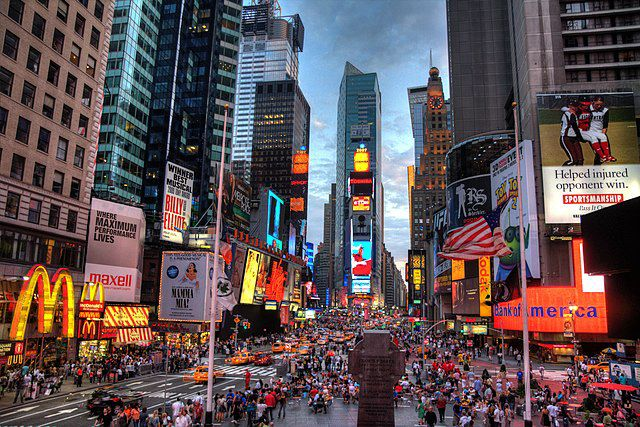
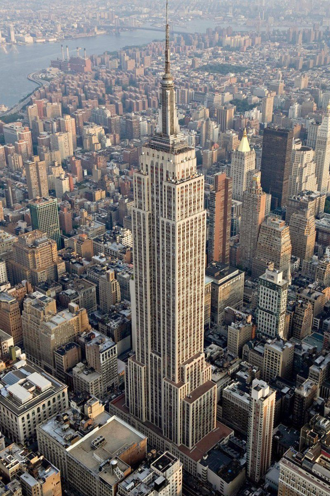

La Statue de la Liberté est l'un des symboles les plus emblématiques des États-Unis.
Elle a été un cadeau de la France aux États-Unis en 1886 pour célébrer le centenaire de la Déclaration d'indépendance.
Située sur l'île de la Liberté à l'embouchure du port de New York, la statue représente la liberté et l'amitié entre les deux nations.
Elle porte une torche, symbolisant la lumière de la liberté, et une tablette inscrite avec la date de la Déclaration d'indépendance.
Les visiteurs peuvent monter à l'intérieur pour avoir une vue panoramique sur la ville depuis la couronne.
Times Square, surnommée "la croisée des chemins du monde",
se trouve à l'intersection de Broadway et de la 7e Avenue à New York.
C'est un quartier dynamique, réputé pour ses panneaux lumineux spectaculaires qui illuminent le paysage urbain jour et nuit.
En plus d'être le foyer de nombreux théâtres de Broadway, Times Square offre une myriade de restaurants, de magasins et d'attractions touristiques,
en faisant un lieu incontournable pour les visiteurs en quête de l'énergie vibrante de la ville.


L'Empire State Building est l'un des gratte-ciels les plus emblématiques du monde, situé à Manhattan, New York. Construit en 1931, il mesure environ 443 mètres de hauteur avec son antenne.
L'Empire State Building est l'un des gratte-ciels les plus emblématiques du monde, situé à Manhattan, New York. Construit en 1931, il mesure environ 443 mètres de hauteur avec son antenne. Pendant des décennies, il a été le plus haut édifice du monde. Offrant une vue panoramique époustouflante sur la ville, son observatoire au 86e étage est une attraction incontournable pour les visiteurs. L'architecture Art déco de l'Empire State Building en fait un symbole emblématique de la skyline new-yorkaise, apparaissant dans de nombreux films et œuvres culturelles.Pendant des décennies, il a été le plus haut édifice du monde. Offrant une vue panoramique époustouflante sur la ville, son observatoire au 86e étage est une attraction incontournable pour les visiteurs.
L'architecture Art déco de l'Empire State Building en fait un symbole emblématique de la skyline new-yorkaise, apparaissant dans de nombreux films et œuvres culturelles.